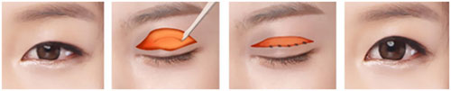
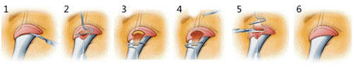
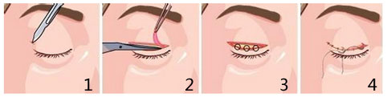

上睑下垂不仅会影响您的美丽，更会影响您的健康。芜湖瑞丽上睑下垂矫正术，为您塑造明亮的眼睛，恢复眼睛的健康。

先天性上睑下垂者、后天性上睑下垂者
上睑提肌缩短术：这种手术方式是采用缩短上睑提肌来达到眼皮上提的目的，矫正上睑下垂，适于轻度上睑下垂的患者。

治疗时长: 1小时左右
恢复时间: 7天左右
治疗效果: 自然且长久
额肌筋膜悬吊法：这种方法是采用自体大腿的一小块阔筋膜与额肌和上睑相连，利用额肌收缩来加强上睑提肌的力量，来达到上睑下垂的矫正的目的。

治疗时长: 1小时左右
恢复时间: 一个星期左右
治疗效果: 自然且长久
额肌瓣法：这也是一种利用额头肌肉收缩来加强上睑提肌功能的方法，在眼皮沿着重睑皱襞处做一小切口，就可以通过分离转移额肌瓣完成手术，起到使眼睛睁大的作用，效果可靠持久，备受求美者的喜爱。

治疗时长: 1小时左右
恢复时间: 一个星期左右
治疗效果: 自然且长久


1、个性化的求美方案：依据求美者的上睑下垂的情况及自身气质制定手术方案
2、专业的医师，精湛的上睑下垂矫正治疗技术，安全可靠有保障
3、精确细微，天然无痕：精准手术，精确细致缝合，矫正不留痕迹
4、全程优质的服务：术后精心护理及跟踪服务，确保上睑下垂矫正不会有后遗症